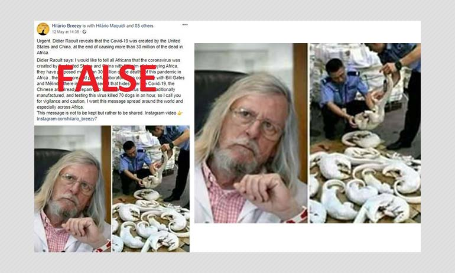
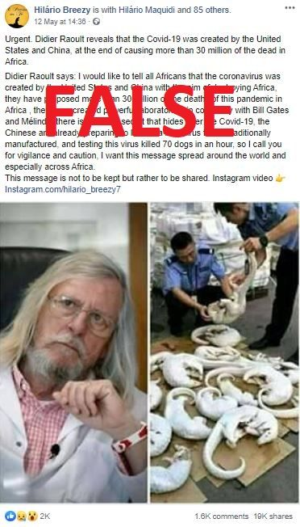

No, The Coronavirus Was Not Created By China & USA To Kill Africans

Facebook posts shared thousands of times claim that French microbiologist Didier Raoult – who has promoted malaria drug hydroxychloroquine to treat COVID-19 – has revealed that the disease was deliberately created by the US and China to kill Africans.However, there is no record of Raoult making such a statement and his office flatly rejected the claim.Scientists believe the virus emerged from a natural source.
'Didier Raoult reveals that the Covid-19 was created by the United States and China, at the end of causing more than 30 million of the dead in Africa (
sic ),' reads a Facebook post shared more than 19,000 times since it was published on May 12, 2020.
The post claims the French scientist said that the US and China 'have created powerful laboratories' alongside billionaire philanthropist Bill Gates 'with the aim of destroying Africa'.
A similar post circulating in French was shared more than 165,000 times before it was deleted.AFP Fact Check has archived it here.
Screenshot of the false claim shared on Facebook, taken on May 19, 2020
Didier Raoult has hailed malaria drug hydroxychloroquine as a treatment for COVID-19 patients, but a number of recent studies have found the drug – which can also have adverse side effects – ineffective in treating the disease.
US President Donald Trump is a vocal champion of the drug and made the surprise announcement on May 18 that he had been taking it for about a week.
Contacted by AFP Fact Check, Raoult's specialised infectious diseases hospital in Marseille rejected the comments attributed to him in the Facebook post.
The scientist 'has never taken any stand on this subject,' the Institut Hospitalo-Universitaire de Marseille told AFP Fact Check by phone.
Natural origin
In February, The Lancet medical journal published a statement signed by dozens of scientists around the world which condemned 'conspiracy theories suggesting that COVID-19 does not have a natural origin'.It pointed to numerous studies that 'overwhelmingly conclude' the disease originated in wildlife.
'We stand together to strongly condemn conspiracy theories suggesting that COVID-19 does not have a natural origin' NEW: Statement in support of scientists, public health medical professionals of China combatting #COVID19 Authors invite others to join https://t.co/YMk9vbgBDW pic.twitter.com/lMkp5a6xUE — The Lancet (@TheLancet) February 19, 2020
Scientists believe the new coronavirus originated in bats before passing to humans in China's rapidly urbanising Hubei province, probably via a third species.
Too complex to create a virus
Contacted by AFP Fact Check last month, Etienne Simon-Lorière, virologist at the Institut Pasteur in Paris, said it would be 'infinitely too complex' for a scientist to create a virus.'Even if the most brilliant scientist wanted to create a virus, it would be infinitely too complex because you'd have to create something entirely new,' he said.'What you could try to do is create something from the elements of a pre-existing virus, like SARS-CoV-1, for example.But in that case, you would find signs in the RNA (ribonucleic acid, genetic code similar to DNA) sequence that would correspond to parts of the genome of the pre-existing virus', which is not the case with COVID-19, he said.Marie-Paule Kieny, head of research at France's Inserm public health research organisation, rejected claims the virus came from a 'laboratory manipulation'.'The RNA sequence of SARS-2 CoV (the new coronavirus, editor's note) shows that the sequence of a bat coronavirus found in China, RaTG13, is the closest parent to SARS-2, particularly strains that have previously circulated in Wuhan,' she told AFP Fact Check last month.
Posted On: 2020-05-22T01:09:00
Posted By: AFP

Content Date: 2020-05-22
Download Date: 2021-05-13
Document ID: L0C04C6XK